Skeleton, round 2: ten directions What you see after clicking Existentialism on the globe. The globe stays in every one. Real content from the pilot. Small insets show the second frame where a direction has one.
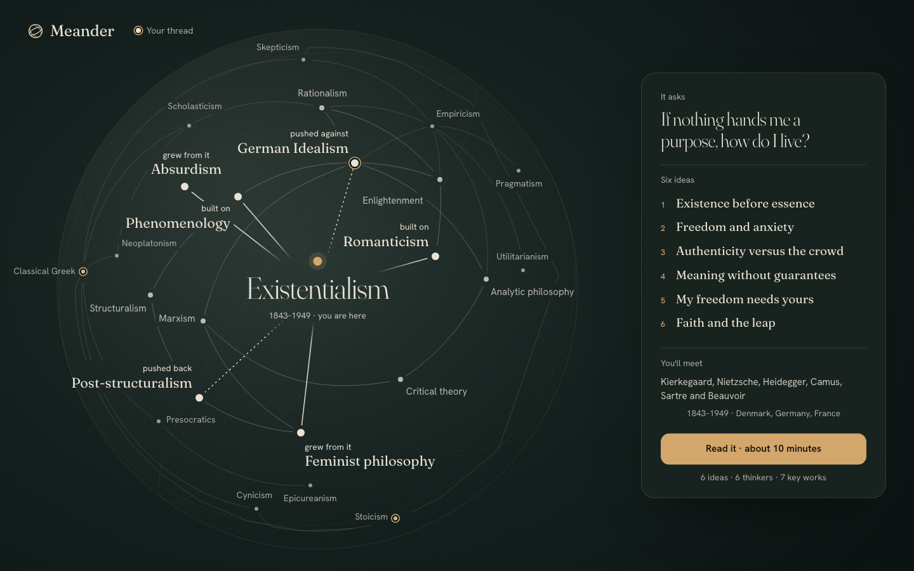
1 · The card, improved Baseline: same globe, same card, re-ordered as question, six ideas, people, size 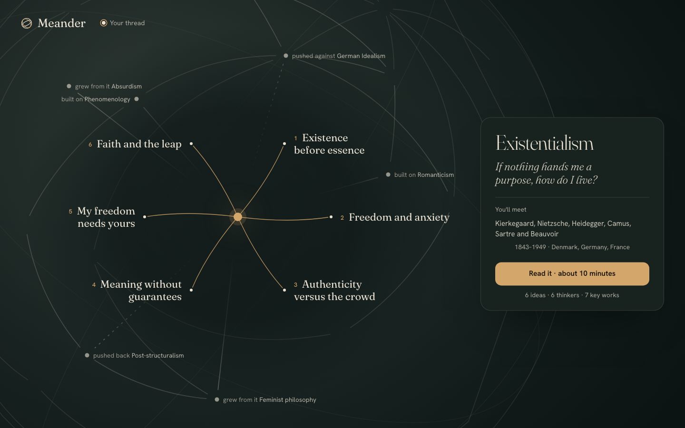
2 · The knot opens On the globe: you zoom into the school and its knot opens into six threads, one per idea 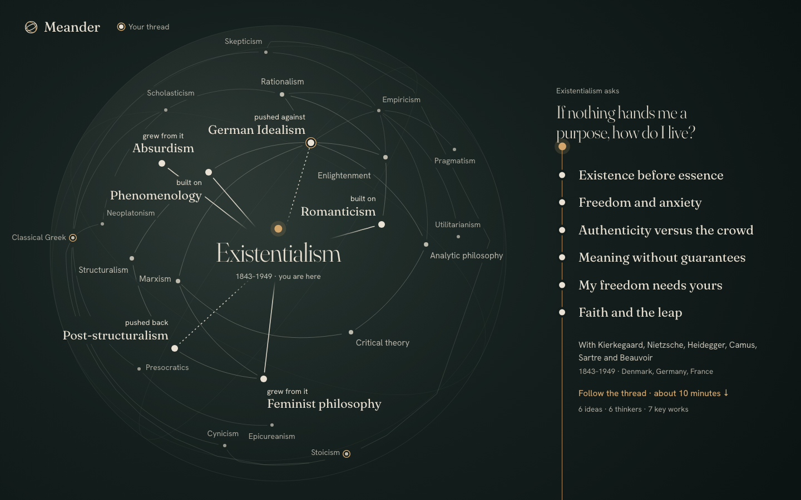
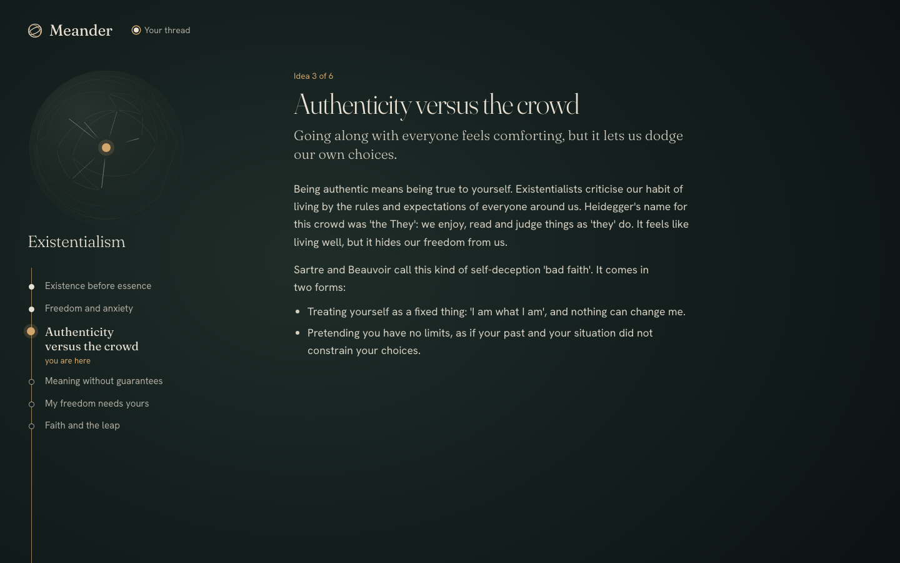
then: reading, idea 3 3 · The spine A brass thread with six beads, no box; it stays beside the article as "you are here" 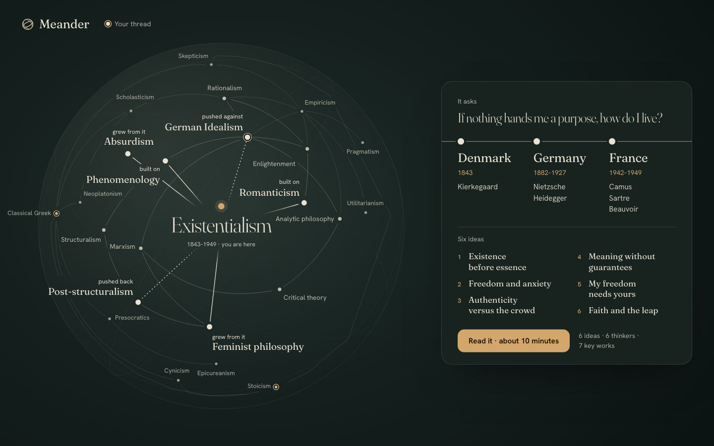
4 · The journey Where and when lead: three stops on a thread, Denmark, Germany, France 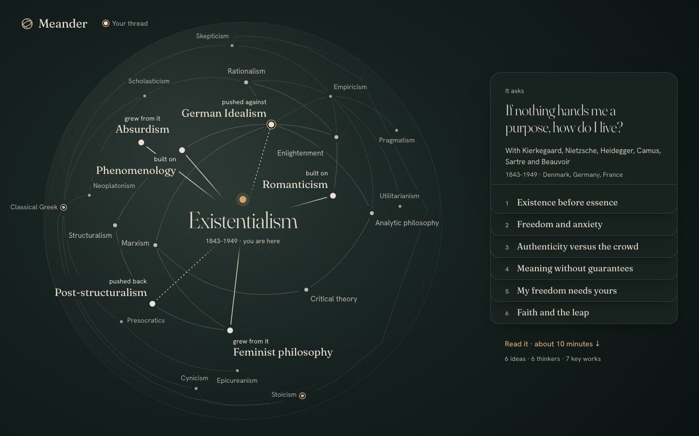
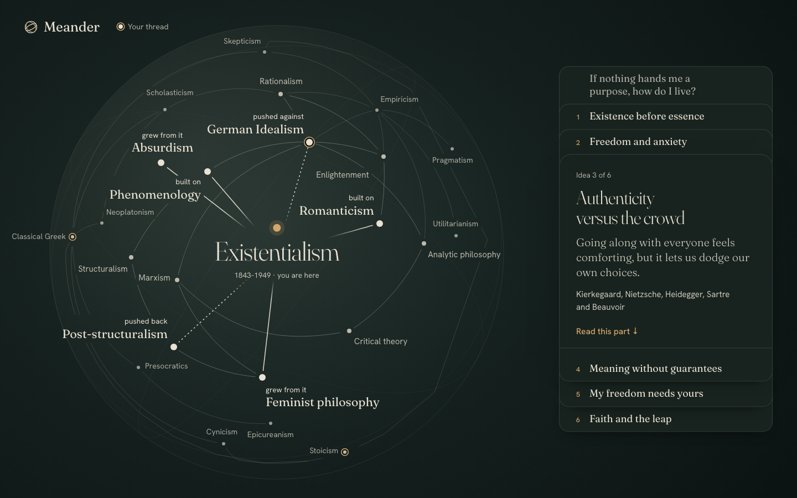
then: idea 3 pulled 5 · Index cards A deck: the question on top, six idea cards peeking out below; pull one to the front 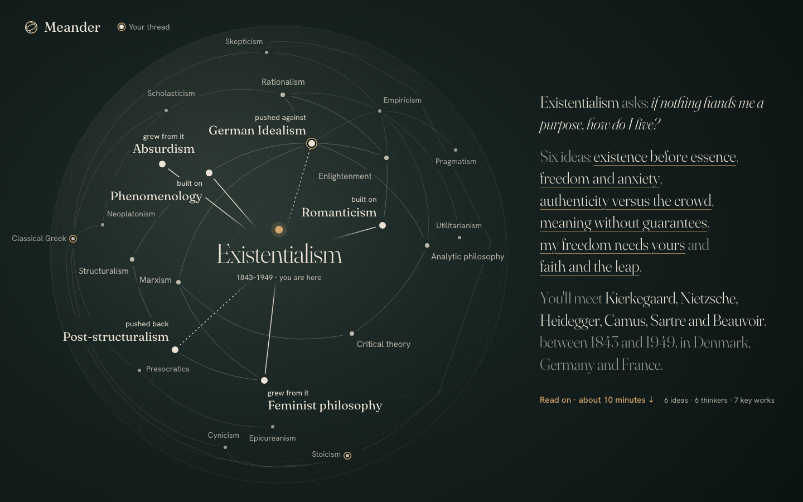
6 · One sentence Bold: no card, no list. The skeleton is three plain sentences in large type 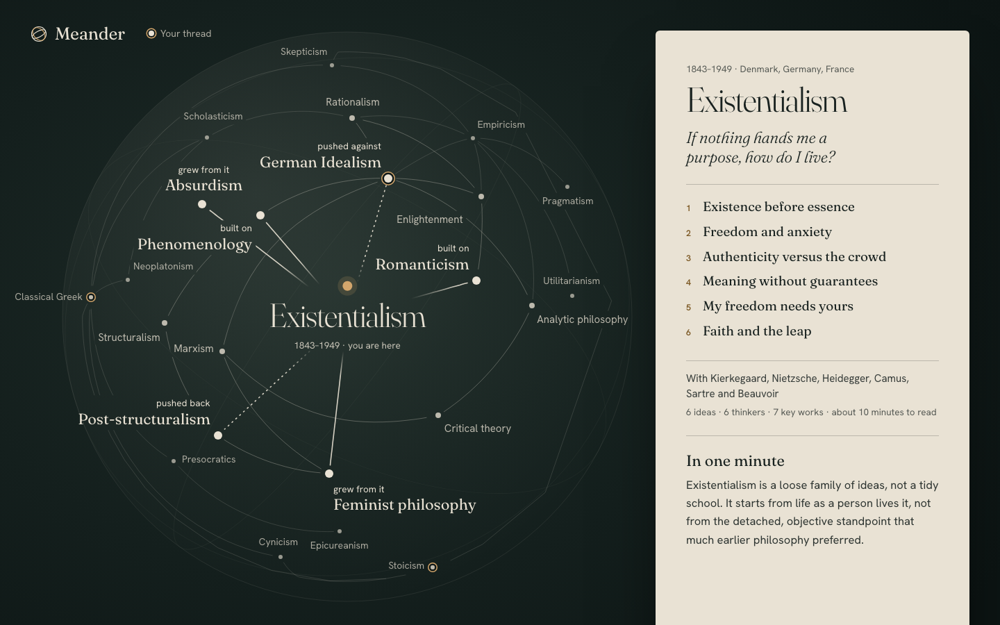
7 · The page Bold: a sheet of paper on the dark table. The skeleton is the title page of the article itself 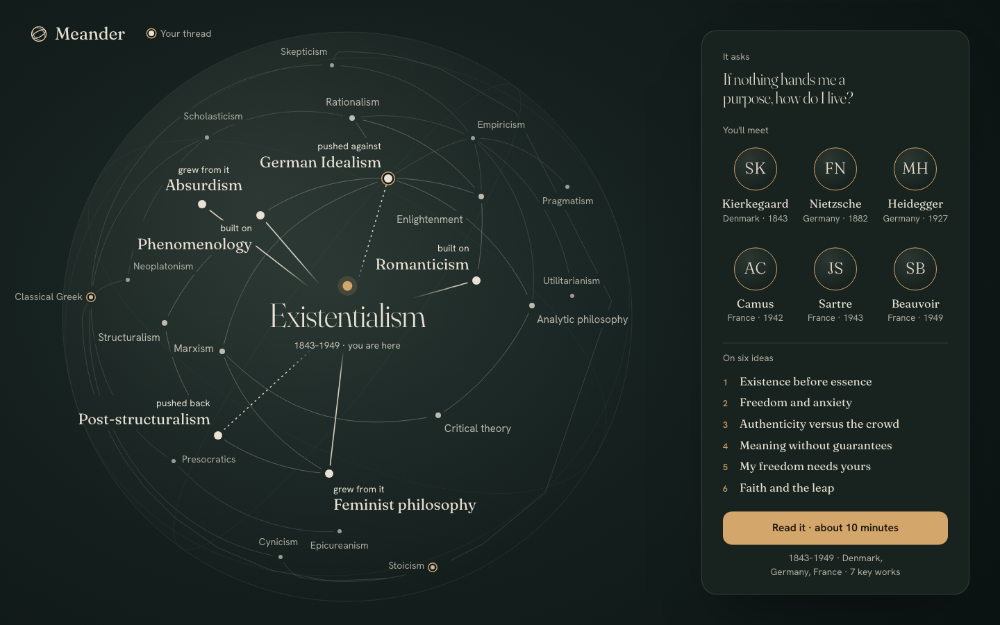
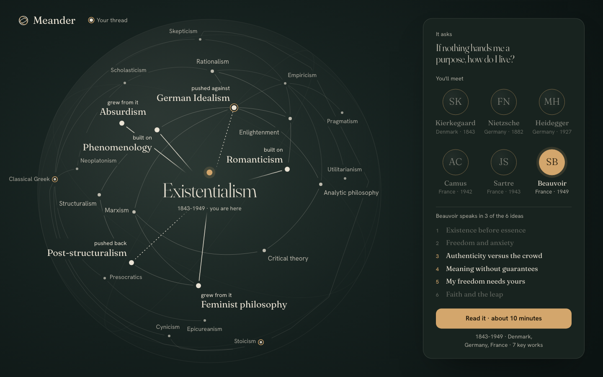
then: Beauvoir picked 8 · The cast People lead: six faces to meet; pick one and their ideas light up 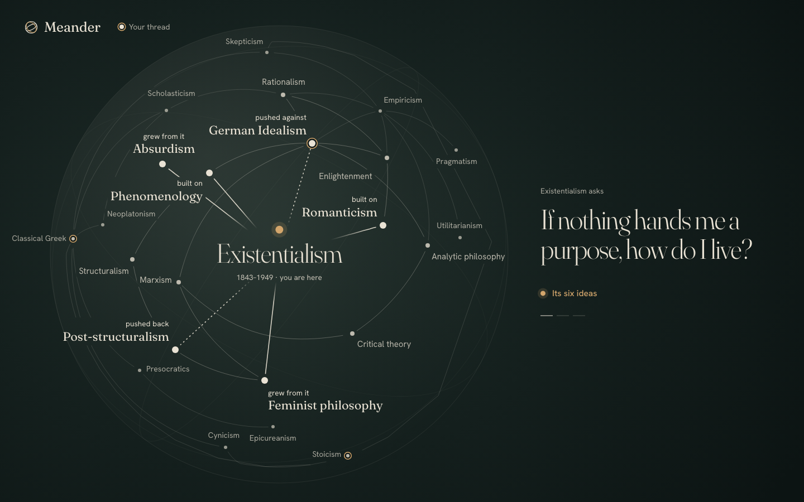
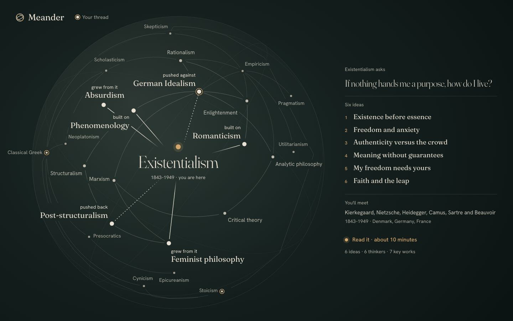
then: unfolded 9 · Unfold Staged in time, not space: the question alone first, then ideas, then people 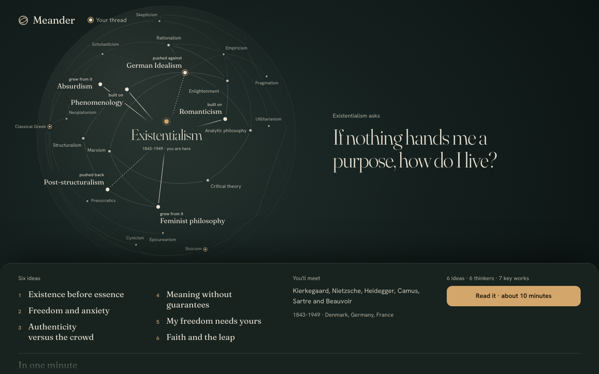
10 · The horizon A low sheet along the bottom; the question stands big beside the globe; the article rises from it